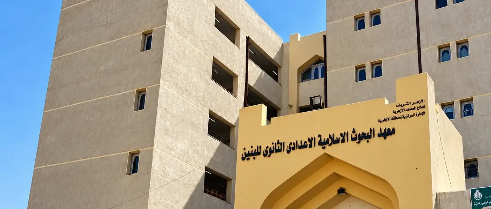

Jalur 2 · Ma'had
Sekolah resmi Al-Azhar untuk jenjang SMP dan SMA
Ma'had Al-Azhar adalah bagian dari sistem pendidikan resmi Al-Azhar di Kairo. Santri belajar ilmu syar'i, bahasa Arab, dan pelajaran umum, sambil tinggal di asrama yang didampingi musyrif.

Yang dipelajari di ma'had
Kurikulumnya memadukan tiga bagian, dan lulusannya umumnya melanjutkan ke jenjang perguruan tinggi di Universitas Al-Azhar.
- Ilmu syar'i: Al-Qur'an, tafsir, hadis, fiqih, dan aqidah
- Bahasa Arab, lisan maupun tulisan
- Pelajaran umum seperti matematika, sains, dan sejarah
Jenjang dan usia
- I'dadi
- Setingkat SMP atau MTs
- Tsanawi
- Setingkat SMA atau MA
- Usia
- 13 sampai 30 tahun, putra maupun putri
Durasi mengikuti jenjang formal, dan bisa lebih cepat lewat program akselerasi bagi yang memenuhi syarat.
Alur pendaftaran sampai penempatan kelas
Lulusan SD, SMP, maupun SMA menjalani alur yang sama. Kelas ditentukan lewat tes di Kairo, bukan dari ijazah Indonesia, jadi setiap calon punya kesempatan yang sama.
-
Kirim berkas
Pindaian KTP atau kartu keluarga, akta, pasfoto, dan surat rekomendasi dikirim ke tim kami.
-
Visa dan keberangkatan
Kami proses visa dan mengatur jadwal keberangkatan bersama rombongan.
-
Pendaftaran di Kairo
Setibanya di Kairo, tim kami membantu pendaftaran formal dan orientasi santri baru.
-
Tes dan kelas bahasa
Tes kemampuan bahasa Arab, lalu mengikuti dan menyelesaikan kelas bahasa sesuai level.
-
Tes qobul dan penempatan kelas
Hasil tes qobul menentukan kelas: I'dadi kelas 1 sampai 3, atau langsung Tsanawi bila kemampuannya mencukupi.
Asrama dan pendampingan harian
Santri tinggal di lingkungan pelajar dengan pendampingan musyrif dan musyrifah, serta kegiatan belajar yang berjalan setiap hari.
Rincian fasilitas dan biaya- Ruang belajar yang nyaman dan aman
- Program persiapan bahasa Arab harian
- Pembimbing setoran Al-Qur'an dan kajian harian
- Pendampingan musyrif dan musyrifah 24 jam
- Laporan bulanan musyrif/ah ke wali lewat rapat daring setiap tanggal 1
Rincian biaya jalur ma'had
Ada dua komponen: biaya keberangkatan yang dibayar sekali, dan biaya asrama yang dibayar setiap bulan selama di Kairo.
Keberangkatan
- Biaya keberangkatan, sekali bayar
- Rp 22.000.000
- Tiket pesawat Jakarta ke Kairo
- Visa masuk Mesir
- Pendampingan di bandara Jakarta
- Pemberkasan di Jakarta
- Bimbingan lapor diri ke KBRI Kairo
- Bimbingan pendaftaran dan pemberkasan di Kairo
- Biaya asrama bulan pertama
- Perlengkapan pribadi: selimut musim dingin, lemari, kasur, dan bantal
Asrama di Kairo
- Biaya asrama, per bulan
- Rp 1.800.000
- Makan dua kali sehari
- Lokasi strategis di lingkungan pelajar dan mahasiswa
- Tempat belajar yang aman dan nyaman
- Gas, air, dan listrik sudah termasuk
- Kulkas, mesin cuci, pemanas air, dan filter air
- Peralatan dapur lengkap
- Kajian harian bersama guru yang kompeten
- Program persiapan bahasa Arab
- Pembimbing setoran Al-Qur'an
- Musyrif dan musyrifah 24 jam di asrama
- Biaya bersifat estimasi tahun 2026 dan dapat berubah mengikuti regulasi Al-Azhar serta kebijakan pemerintah Mesir dan Indonesia.
- Uang yang sudah dibayar bisa dikembalikan dengan ketentuan: DP pemberkasan tidak dikembalikan (Rp 5 juta untuk Ma'had dan Rp 4,5 juta untuk Kuliah), sedangkan kelebihan pembayaran di atas DP dikembalikan.
Yang sering ditanyakan
Masih ada yang ingin ditanyakan? Sampaikan saat konsultasi, tim kami menjawabnya satu per satu.
Apakah ijazah Indonesia menentukan kelas?
Tidak. Setiap calon dites di Kairo, dan penempatan mengikuti kemampuan bahasa serta akademiknya.
Berapa lama masa pendidikannya?
Umumnya sama dengan sekolah formal di Indonesia, dan bisa lebih singkat lewat program akselerasi.
Bagaimana program akselerasinya?
Dari kelas 2 I'dadi (SMP), pelajar bisa langsung naik ke Tsanawi (SMA). Dari kelas 2 Tsanawi, pelajar bisa langsung memperoleh ijazah dan melanjutkan ke Universitas Al-Azhar. Syaratnya nilai tes yang tinggi, jadi kesungguhan belajar tetap kuncinya.
Kenapa alurnya sama untuk lulusan SD, SMP, dan SMA?
Karena semua calon mendapat kesempatan yang sama. Setiap pelajar mengikuti tes bahasa, menyelesaikan kelas bahasa, lalu tes qobul. Yang membedakan penempatan kelas adalah kemampuan, bukan ijazah.
Apakah Hamasah membantu belajar setelah tiba di Kairo?
Ya. Hamasah menyediakan asrama khusus di Kairo dan pendampingan belajar bersama pengajar untuk bahasa Arab, persiapan ujian, dan adaptasi dengan sistem Al-Azhar. Penjelasan lengkapnya ada di artikel Mengenal Ma'had Al-Azhar.
Apakah Hamasah membantu visa dan pendaftaran?
Ya. Tim kami membantu pemberkasan, koordinasi visa, dan pendampingan setibanya di Kairo.
Konsultasi gratis sebelum mendaftar
Ceritakan usia dan riwayat sekolah ananda, lalu kami bantu menimbang jenjang yang paling sesuai.